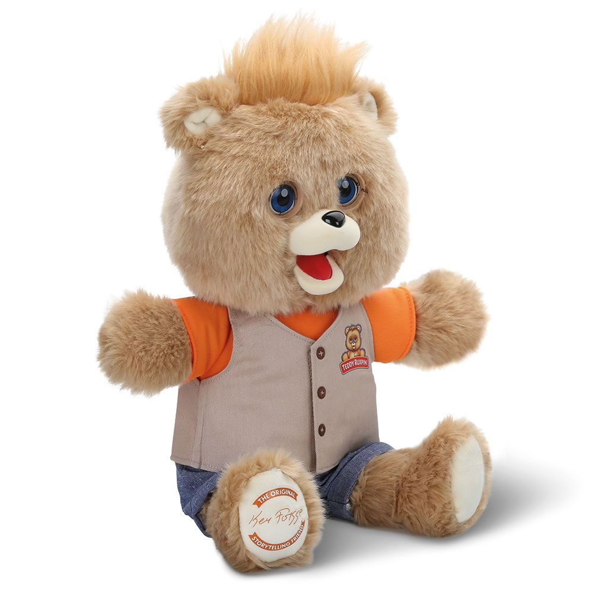
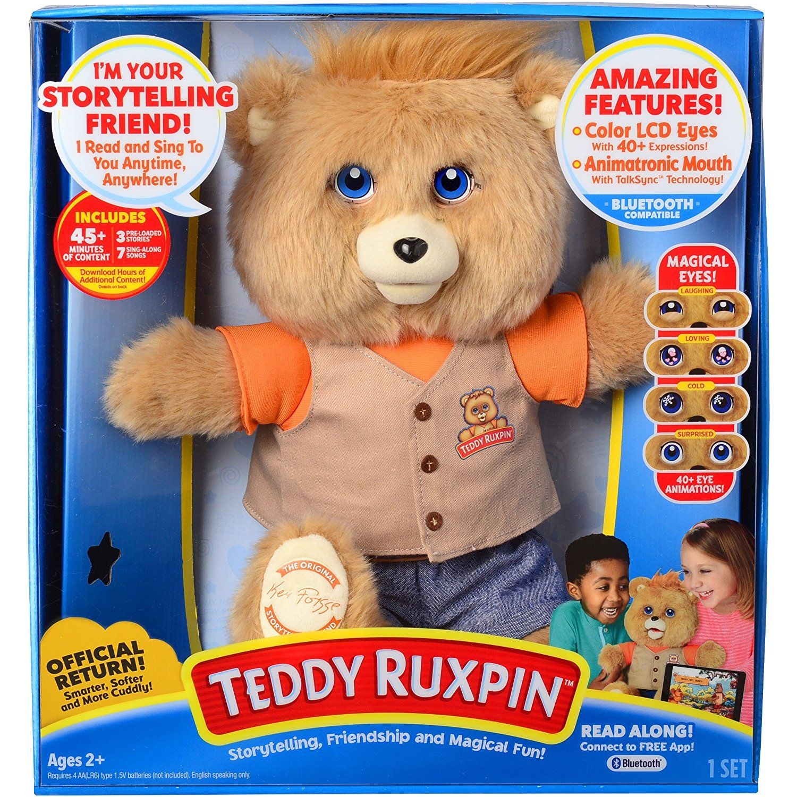

About Teddy Ruxpin
 Only at $80
Teddy Ruxpin is a beloved and iconic storytelling teddy bear that has been enchanting children and families for generations. With its endearing personality and captivating storytelling abilities, Teddy Ruxpin becomes more than just a toy; it becomes a cherished friend. This adorable animatronic plush bear features expressive moving eyes, a movable mouth, and motorized storytelling capabilities. With the help of innovative technology, Teddy Ruxpin comes to life as it recounts classic and interactive stories, fostering creativity and imagination in young minds. Combining nostalgia with modern advancements, Teddy Ruxpin continues to bring joy, laughter, and meaningful learning experiences to children worldwide.
Product Highlights
- Interactive Storytelling: Teddy Ruxpin comes equipped with a vast collection of engaging stories, both classic and interactive.
- Expressive Animatronics: With its lifelike moving eyes and animated mouth, Teddy Ruxpin captures the hearts of children and adults alike.
- Easy-to-Use Controls: Teddy Ruxpin's user-friendly controls allow parents and children to navigate its features effortlessly.
- Soft and Huggable Design: Crafted with high-quality materials, Teddy Ruxpin boasts a soft and huggable body, making it the perfect cuddly companion for bedtime stories or playtime adventures.
- Educational Value: Beyond entertainment, Teddy Ruxpin promotes essential educational benefits. From vocabulary expansion to listening comprehension, this interactive toy serves as a valuable tool for early childhood development.
- Safe and Reliable: The safety of children is paramount, and Teddy Ruxpin adheres to the highest safety standards, providing parents with peace of mind
Customer Reviews
-
Our family's experience with Teddy Ruxpin has been nothing short of enchanting! From the moment we introduced it to our children, they were mesmerized by its lifelike features and the captivating stories it tells. It's heartwarming to see our little ones cuddle with Teddy, forming a special bond that transcends generations. The toy's nostalgic charm brings back cherished memories of our own childhood, making it a timeless treasure that truly unites the entire family.
Emily Johnson
-
Teddy Ruxpin is a lifesaver during bedtime routines. Its soothing voice and interactive storytelling keep my little one engaged and eager for bedtime every night.
Mike Anderson
-
Teddy Ruxpin is not just a toy; it's a cherished friend that has found a permanent place in my daughter's heart. The magical world it creates with its expressive eyes and animated mouth is a constant source of wonder and delight. Our playdates have become extra special, as children gather around Teddy, hanging on to every word it says, creating lasting memories of laughter and joy.
Sarah Williams
-
As a father, I'm always on the lookout for toys that foster my child's learning and development. Teddy Ruxpin has surpassed all expectations in this regard. Through interactive storytelling, it ignites my son's imagination and expands his vocabulary. Watching him play and learn with such enthusiasm brings immense joy and reassurance that we've made a fantastic choice with Teddy Ruxpin.
Lisa Brown
-
Teddy Ruxpin has quickly become the star of playdates in our house. The kids are always excited to gather around and listen to the magical tales it weaves.
John Smith